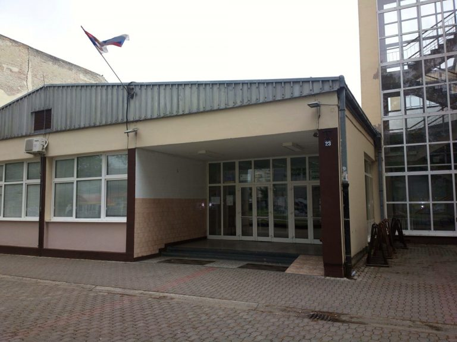
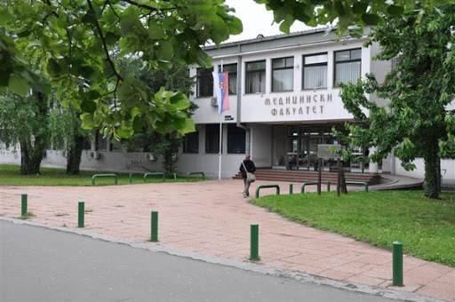
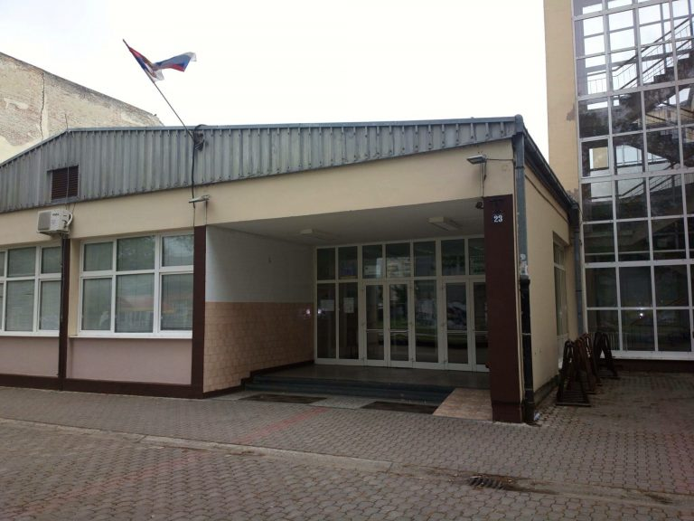
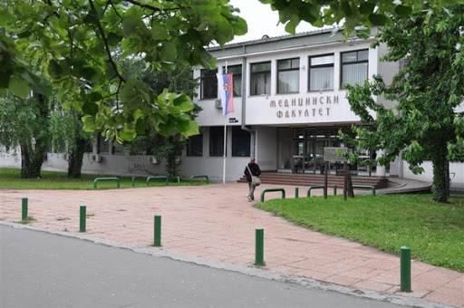
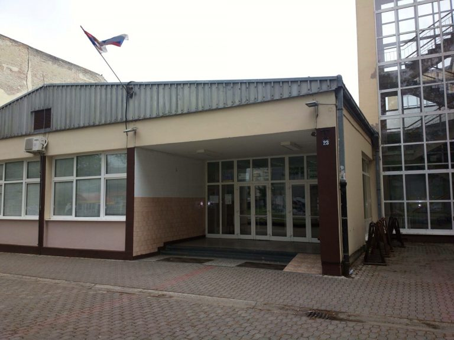
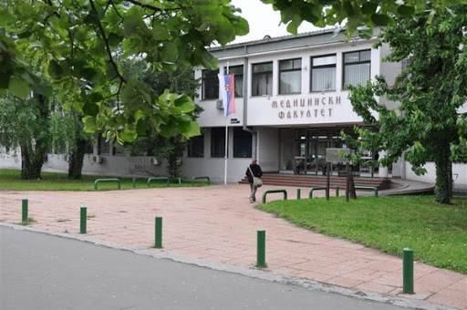
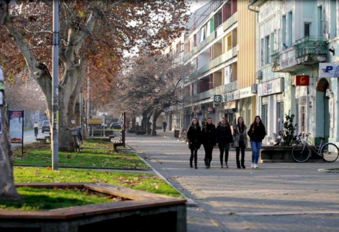
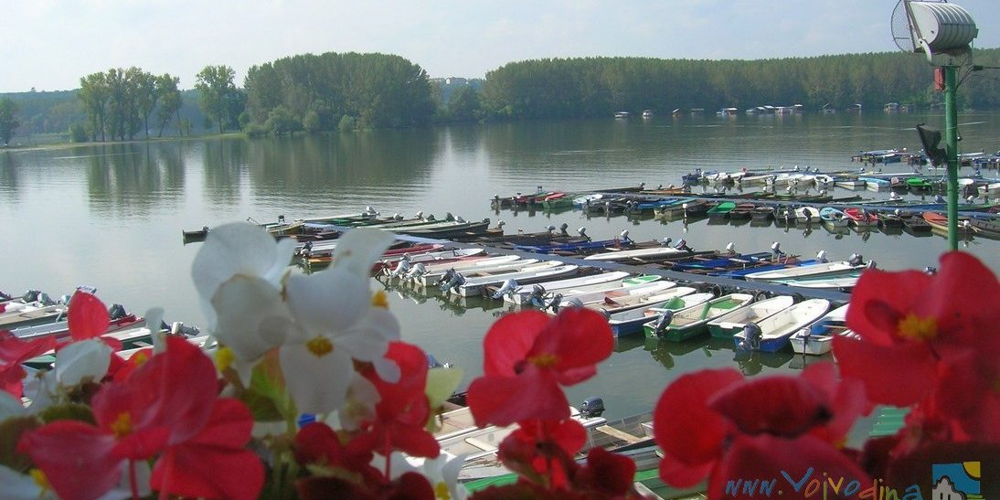
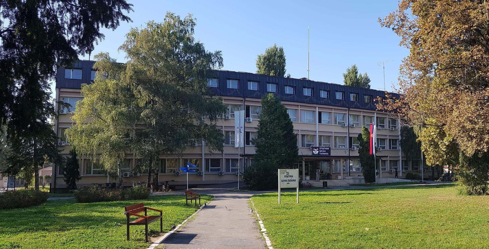
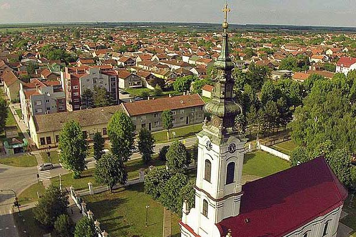

 
  Ime i prezime: Tijana Đukić
Odeljenje: IV 2
Adresa: Segedinski put 11
Broj: 06x-xxx-xx-xx
Osnovno: OŠ "Desanka Maksimović"
Srednje: Gimnazija "20.OKTOBAR"
Buduće: Planiram da upišem medicinu.
  Prošlost, Sadašnjost, Budućnost
 Bačka Palanka je gradsko naselje u Srbiji, u opštini Bačka Palanka, u Južnobačkom okrugu. Prema popisu iz 2011. bilo je 28239 stanovnika.Ona je, sagledavajući opštinska naselja u Bačkoj, najjužnije i Dunavu najbliže naselje. Istočno od opštinskog sedišta, pored novosadskog puta leži Čelarevo udaljeno 11 km. U pravcu severozapada, na somborskom putu su Obrovac, udaljen od Bačke Palanke 9 km i Tovariševo, udaljeno 14 km. Nešto zapadnije, na lokalnom putu su Karađorđevo, do kog ima 10 km i Mladenovo, udaljeno od opštinskog središta 14 km. U pravcu severa, na putu za Vrbas su sledeća naselja: Nova Gajdobra na 10 km, Gajdobra na 14 km, Silbaš na 20 km i Despotovo udaljeno od opštinskog centra 29 km. Od Despotova put vodi do Pivnica, najudaljenijeg naselja od opštinskog središta do koga ima 34 km, dok od Silbaša put vodi do Paraga udaljenih 25 km. Preko Dunava i dela Vukovarske opštine, što je svojevrsni kuriozitet, dolazi se Podunavskim putem do Neština, udaljenog od Bačke Palanke 9 km, a na lokalnom putu je i poslednje opštinsko naselje Vizić, udaljeno od Podunavskog puta 6, a od centra opštine 13 km. Područje bačkopalanačke opštine prostire se, u reljefnom pogledu, na svim morfološkim jedinicama karakterističnim za Vojvodinu, sem peščare. Pored Dunava je aluvijalna ravan, odnosno rit, a to su upravo najniže površine u reljefu Vojvodine. U našem slučaju nadmorska visina ove površine iznosi oko 80 m.  Severno do rita nalazi se 3-5 m viša površina. Nju predstavlja aluvijalna terasa koju je, kao i prethodnu, nataložio Dunav. Ritovi su ugroženi pri svakom visokom vodostaju, zbog čega je u njima stambena izgradnja zabranjena. Aluvijalnu terasu, na kojoj je izgrađena Bačka Palanka, ugrožavaju samo ekstremno visoki vodostaji. Od aluvijalne terase dalje prema severu prostire se, za još 2-5 m viša stepenica, lesna terasa, koja predstavlja deo prostrane bačke lesne terase.  Poljoprivreda je dobro razvijena ali moćna Bačkopalanačka industrija ipak je glavni pokretač grada i okoline. Tri privredna giganta Nektar sokovi, Čelarevska pivara i fabrika podnih i zidnih obloga Tarket zapošljavaju nekoliko hiljada ljudi a pored njih kao izuzetno uspešne kompanije možemo navesti Dunavprevoz, industriju slada AD Maltineks, mesnu industriju AD Bačka – Bačka Palanka, metalsko preduzeće Kovis BP, Majevica, Platner, Enia, Fertil i mnogi drugi. ___________________________________________________________________________________________________________________________________________________________________________________________
O Bačkoj Palanci

Vraćanje na početnu stranicu: Pocetna stranica
Vrh stranice